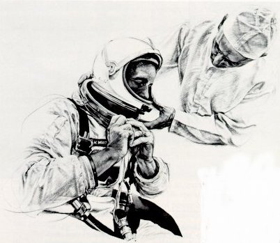
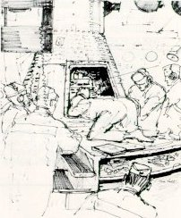

The Apollo program grew out of a ferment of imaginative thought and public
debate. Long-range goals and priorities within our governmental, quasi-governmental,
and private institutions were agreed on. Leaders in political, scientific,
engineering, and many other endeavors participated. Debate focused on such questions
as which should come first - increasing scientific knowledge or using man-machine
combinations to extend both our knowledge of science and lead to advances in
engineering? Should we concentrate on purely scientific unmanned missions? Should
such practical uses of space as weather observations and communication relay stations
have priority? Was it more vital to concentrate on increasing our military strength,
or to engage in spectacular prestige-building exploits?
Robert McCall,
MERCURY SUIT TEST,
felt pen on paper
In the turbulent 1960s, Apollo flights proved that man can leave his earthly home
with its friendly and protective atmosphere to travel out toward the stars and
explore other parts of the solar system. In the 1970s the significance of this new
capability is still not clear. Will there be a basic shift of power here on Earth to
the nation that first achieves dominance in space? Can we maintain our desired
progress toward a prosperous peaceful world if we allow ourselves to be outclassed
in this new technology? Policymakers in Congress, the White House, the State and
Defense Departments, the National Science Foundation, the Atomic Energy Commission,
NASA, and other agencies agreed in the 1960s that we should develop national
competence to operate large space systems repetitively and reliably. It was also
agreed that this should be done in full public view in cooperation with all nations
desiring to participate. However, this consensus was not unanimous. Critics thought
that the Apollo program was too vast and costly, too great a drain on our
scientific, engineering, and productive resources, too fraught with
danger, and contended that automatic unmanned machines could
accomplish everything necessary.

Paul Calle,
SUITING UP,
pencil and wash on paper
Specialized groups frequently overlooked the multiple objectives of developing
a means of transporting astronauts to and from the Moon. Some manned spaceflight
enthusiasts deplored NASA's simultaneous emphasis on flights to build a solid
base of scientific knowledge of space. Some critics failed to recognize the
value of having trained men make on-site observations, measurements, and
judgments about lunar phenomena, and sending men to place scientific instruments
where they could best answer specific questions.

Robert McCall,
GANTRY WHITE ROOM,
felt pen on paper
A vast array of government agencies participated in the network of
decision-making from which the basic policies that governed the Apollo program
evolved. Collaboration between academic and industrial contributors required
procedures that often seemed burdensome to scientists and enerineers. Even some astronauts failed at
times to appreciate the potential benefits of precise knowledge as to the effect of
weightlessness and spaceflight stress on their bodies. Fortunately our Nation's most
thoughtful leaders recognized the necessity as well as the complexity of the various
components of NASA's work and strongly endorsed the Apollo program. It is a tribute
to the innate good sense of our citizens that enough of a consensus was obtained to see
the effort through to success.